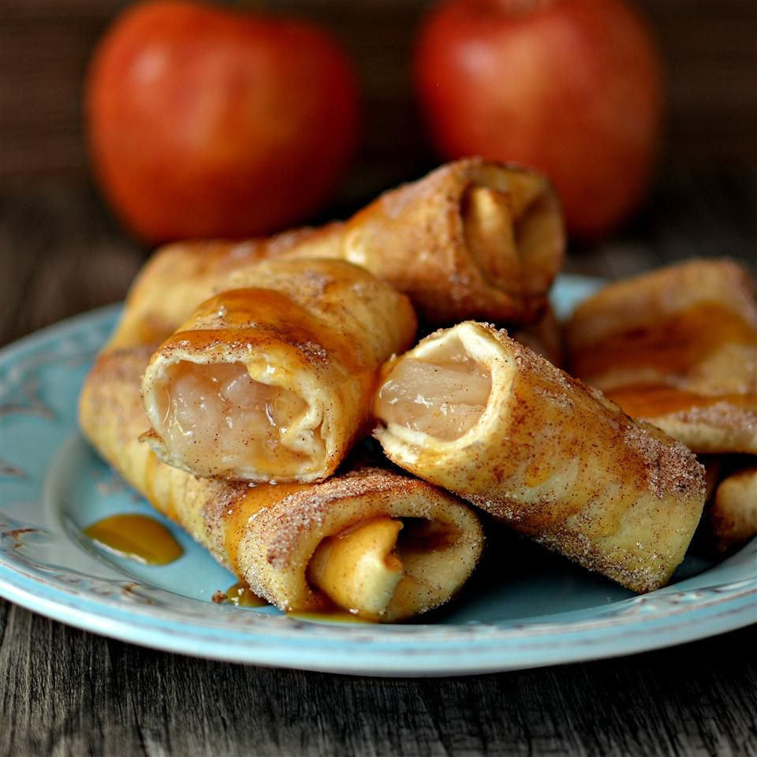

Apple Cinnamon Chimichangas
The holidays are around the corner and with the holidays comes amazing food.
Though the food is always amazing, it can seem like we tend to cook the same dishes every
year. Its about time we try a little something new. Today are gonna throw a mexican twist
to this classic desert.
Ingredients
- 1(21 ounce) can of apple pie filling
- 1/2 cup cinnamon sugar
- 15(6 inch) flour tortillas
- oil for frying
Steps
- Heat apple pie filling in a small pot over medium-low heat until warmed through,
about 5 minutes
- Place cinnamon sugar in a shallow dish
- Spoon 1 1/2 tablespoons of filling onto each tortilla. Fold in opposing edges
and roll up as youd would a burrito
- Heat oil in a large, deep saucepan over medium heat
- Place a batch of rolled tortillas seam-side down in the hot oil and fry until
browned and crispy, 1 to 2 minute. Turn and continue frying until all sides are
browned, 1 to 2 minutes more. Roll in cinnamon sugar to coat. Repeat with
remaining batches.